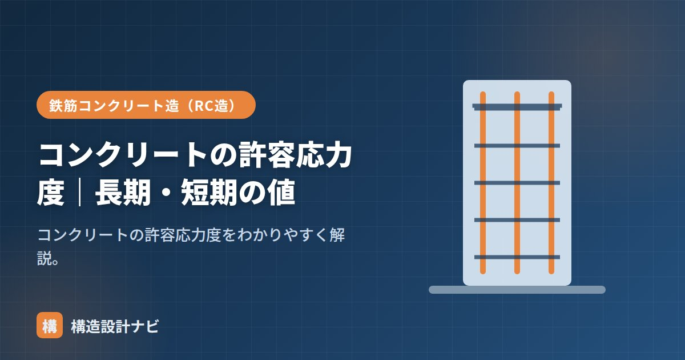

コンクリートの許容応力度｜長期・短期の値

コンクリートの許容応力度とは、部材に生じさせてよい応力の上限値のことで、許容応力度計算（一次設計）において部材断面の安全性を確認する際の基準となります。コンクリートの許容応力度は設計基準強度Fcから計算し、荷重が作用する時間の長さによって長期・短期の2種類に分かれます。
- 長期許容圧縮応力度＝Fc/3、短期許容圧縮応力度＝2Fc/3（長期の2倍）
- 許容せん断応力度は圧縮よりはるかに小さく、鉄筋による補強が前提
- 長期は常時荷重、短期は地震・積雪などの一時的な荷重に対応した値
長期・短期の許容圧縮応力度
短期許容圧縮応力度 ＝ 2 × Fc ÷ 3（＝長期の2倍） Fc：設計基準強度。例 Fc24 → 長期8・短期16 N/mm²
この式が意味しているのは、常時作用する荷重に対しては安全率をおよそ3倍見込み、短時間しか作用しない地震・暴風時の荷重に対しては安全率をおよそ1.5倍まで下げて許容している、ということです。地震のような一過性の荷重は、材料が多少大きな応力を受けても直ちに破壊には至らないと考えられるため、長期より緩い基準が採用されています。
計算例
設計基準強度Fc21（21N/mm²）の場合を考えてみます。
- 長期許容圧縮応力度＝21÷3＝7N/mm²
- 短期許容圧縮応力度＝21×2÷3＝14N/mm²
柱に生じる常時の圧縮応力度が7N/mm²を超えないように断面を決め、さらに地震時には14N/mm²を超えないことを確認する、という流れで断面の妥当性を検証します。
許容せん断応力度
せん断は圧縮よりずっと小さい値です。長期の許容せん断応力度は、おおむねFc/30かつ一定の上限以下（例：(0.49＋Fc/100) など）で求めます。短期はその2倍です。せん断は数値が小さいため、RC部材ではせん断補強筋（あばら筋・帯筋）で補います。コンクリート単体でのせん断耐力が不足する分を鉄筋が肩代わりする、という考え方は梁のあばら筋・柱の帯筋の設計における基本原理です。
長期と短期の違い
長期は固定荷重・積載荷重など常時かかる荷重に対する値、短期は地震・台風など短時間の荷重に対する値です。短時間なら大きな応力に耐えられるため、短期は長期の2倍に設定されます。
| 長期許容応力度 | 短期許容応力度 | |
|---|---|---|
| 対象となる荷重 | 固定荷重・積載荷重・積雪（多雪区域） | 地震荷重・暴風荷重・一般積雪 |
| 作用時間 | 常時（長期間継続） | 短時間（一時的） |
| 圧縮応力度の目安 | Fc/3 | 2Fc/3 |
許容応力度計算はあくまで一次設計（中規模の地震・荷重に対する検証）の考え方です。大地震時の安全性は、保有水平耐力計算など別の検証（二次設計）で確認します。許容応力度計算だけで建物全体の耐震性が保証されるわけではない点に注意してください。
計算書のチェックでは、短期の検定比だけでなく地震時荷重に長期荷重が重畳しているかを見るようにしています。若手の計算書は短期の応力度検定にばかり目が向き、常時荷重による応力度の確認が甘くなっていることがあるため、そこは重点的に確認するポイントです。
Fcごとの許容応力度一覧
設計でよく使う値をまとめます。圧縮はFcを3で割るだけなので暗算できます。
| Fc | 長期圧縮（Fc/3） | 短期圧縮（2Fc/3） | 長期せん断（目安） | 短期せん断（目安） |
|---|---|---|---|---|
| 18 | 6.0 | 12.0 | 約0.67 | 約1.34 |
| 21 | 7.0 | 14.0 | 約0.70 | 約1.40 |
| 24 | 8.0 | 16.0 | 約0.73 | 約1.46 |
| 27 | 9.0 | 18.0 | 約0.76 | 約1.52 |
| 30 | 10.0 | 20.0 | 約0.79 | 約1.58 |
※単位はN/mm²。せん断は (0.49＋Fc/100) と Fc/30 の小さいほうを目安とした概算値です。実際の設計では規準で確認してください。
この表で注目すべきは、せん断の許容応力度が圧縮の10分の1以下だという点です。Fc24なら圧縮8.0に対しせん断は0.73程度しかありません。コンクリートがせん断にきわめて弱いことがわかります。だからこそ、梁にはあばら筋、柱には帯筋を入れて、コンクリートだけでは足りないせん断耐力を鉄筋で補うのです。
鉄筋の許容応力度との関係
RC部材の検討では、コンクリートと鉄筋それぞれの許容応力度を使います。役割分担を整理しておきましょう。
| 材料 | 負担する応力 | 長期許容応力度の目安 |
|---|---|---|
| コンクリート | 圧縮 | Fc/3（Fc24なら8.0 N/mm²） |
| 鉄筋（SD295） | 引張・圧縮 | 195 N/mm² |
| 鉄筋（SD345） | 引張・圧縮 | 215 N/mm² |
数値を比べると、鉄筋の許容応力度はコンクリートの25倍前後あります。断面積あたりで見れば鉄筋のほうが圧倒的に強いわけですが、鉄筋は高価で細長く座屈しやすいため、圧縮はコンクリートに任せ、引張だけを鉄筋が負担するのが合理的です。この役割分担が鉄筋コンクリートという材料の本質です。
コンクリートの短期許容圧縮応力度は長期の2倍ですが、鉄筋は異なります。鉄筋の短期許容引張応力度は基準強度Fそのもの（SD345なら345N/mm²）で、長期（F/1.5）の1.5倍です。材料によって長期と短期の関係が違う点は、計算のときに混同しやすいので注意が必要です。
よくある質問
Q1. 許容応力度計算だけで大地震に対する安全性は確認できますか？
できません。許容応力度計算（一次設計）は、中規模の地震（震度5強程度）で建物が損傷しないことを確認するものです。大地震（震度6強〜7）に対する検討は、保有水平耐力計算などの二次設計で別途行います。建物の規模や構造によっては、一次設計だけで済むルート1もありますが、その場合は壁量など別の規定で大地震への安全性を担保しています。
Q2. なぜコンクリートはせん断にこれほど弱いのですか？
せん断力が作用すると、部材内部には斜め方向の引張応力が生じるためです。コンクリートは引張に弱く（圧縮の約1/10）、この斜め引張に耐えられずに斜めのひび割れが発生します。そのため、ひび割れの方向を横切るようにあばら筋・帯筋を配置し、鉄筋が斜め引張を負担する仕組みにします。せん断補強筋が「斜めひび割れを縫い止める」と表現されるのはこのためです。
Q3. Fcを上げれば部材を小さくできますか？
ある程度は可能ですが、限界があります。許容圧縮応力度はFcに比例するため、Fcを上げれば同じ軸力を小さい断面で支えられます。しかし、断面を小さくすると剛性（EI）が下がり、たわみや層間変形が増大します。また、ヤング係数はFcの平方根程度でしか増えないため、強度ほどには剛性が上がりません。高強度コンクリートは、柱の断面を抑えたい高層建築で有効ですが、変形の検討とセットで判断する必要があります。
まとめ
- コンクリートの許容応力度は設計基準強度Fcから求める。
- 長期許容圧縮＝Fc/3、短期＝2Fc/3（長期の2倍）。
- せん断は小さく補強筋で補う。長期は常時、短期は地震・台風用。
- 許容応力度計算は一次設計であり、大地震時の検証は別途必要。